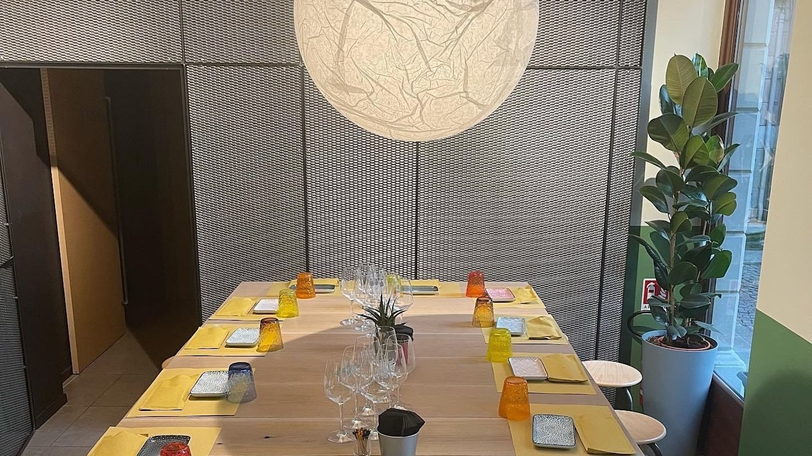

PIZZA IN TEGLIA · PADOVA CENTRO
Un taglio diverso.Un bel crunch.
Scegli il tuo trancio, scopri il Doppio Crunch. La tua prossima pausa buona è qui, nel cuore di Padova.

Morbida dentro.
01 / DAL BANCO AL TUO PIATTO
A ognuno
Tutto il menu
A ognuno
il suo crunch.



02 / UN POSTO IN CENTRO
La tua pausa.
La tua pausa.
Il nostro posto.
Il legno dei tavoli, i piatti colorati, una pizza da dividere. In Via San Francesco, affacciati su Piazza Antenore, c’è un posto per il tuo prossimo crunch.
Un pranzo al volo, una cena senza fretta o qualcosa di buono da portare con te.
Entra da Forbici
03 / SCEGLI COME GUSTARLA
Facciamo